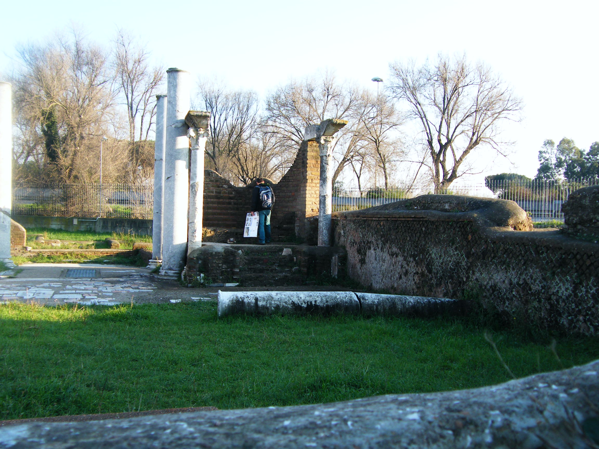

Ostia Synagogue

- Find Name
- Ostia Synagogue
- Description
- The synagogue of Ostia, the port of Rome, discovered by chance in 1961 during roadworks for the Fiumicino airport link and excavated under Maria Floriani Squarciapino. Menorah-carved marble beams and menorah-stamped lamps announced the find: a main hall with benches, a Torah shrine donated by Mindus Faustus (inscription, 2nd-3rd century), and a later aedicula. It is the oldest synagogue yet found in Europe and the oldest mainstream synagogue uncovered outside Israel, in use into the 5th century.
- Historical Period
- Roman
- Evidence Class
- Contextual
- Interpretations
- The building's identification as a synagogue is secure, but its earliest date is debated: Squarciapino dated the first phase to the 1st century, while later scholars (notably L. Michael White) argue the building began as a house only later converted, with the certain synagogue phase in the 2nd century or later. The visible remains are mostly 4th century. No direct link to Paul or to any named Roman Christian is claimed.
- Alternative Names
- Synagogue of Ostia Antica
- Related Places
- Related Books
- Related Events
- Related People
- Scripture Illuminated
- Biblical Significance
- Paul wrote to a church in Rome he had not founded, and Acts closes with him preaching in Rome 'with all confidence, no man forbidding him.' Ostia shows the Jewish world that church grew beside: a large, organised diaspora community at Rome's own harbour, with its own synagogue, Torah shrine, and communal life — the same world of synagogue and Scripture from which the Roman church drew its first members.
- Artifact Date
- 1st century AD (earliest phase, debated); main remains 4th century AD
- Current Location
- In situ, Ostia Antica archaeological park
- Date Discovered
- 1961
- Discovery Location
- Ostia Antica, near Rome, Italy
- Timeline Era
- Early Church
Awaiting Review Not yet checked against scholarly sources. Treat its claims as provisional until this entry is reviewed. About verification
Last reviewed: not yet reviewed